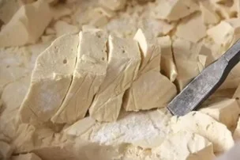

美食特产
酒席（婚嫁相关）
1. 旧时富裕人家：山珍海味
旧时经济条件优越的家庭举办婚宴时的酒席规格，菜品丰盛，包含珍贵食材。
2. 旧时一般人家：“硬十样”
旧时普通家庭婚宴的常见菜品组合，是当时较为普遍的婚宴标准。
3. 解放初期：“四盆六碗”
解放初期婚嫁酒席的常见形式，体现了当时婚宴在菜品数量和搭配上的简化与务实。
4. 70年代：“四汤、四炒、四点心八大菜、一只总盆”
70年代婚嫁酒席的典型组合，涵盖汤品、炒菜、点心、主菜及总盆，反映了该时期婚宴的丰富度提升。
5. 80年代：“六拼盆、十二炒、四点心、十大菜”
80年代婚嫁酒席的形式，菜品数量和种类进一步增加，更显丰盛，体现了时代发展对婚宴规格的影响。
其他美食特产
1. 红蛋、肉饪饼（实物待考证）
婴儿出生第十二天（十二朝），父母分送亲友以答谢庆贺的食品。
红蛋，作为宝宝出生的传统贺礼，寓意美好。其制作方法为：清水洗净鸡蛋煮熟；若要冰裂纹效果，可用勺子轻敲蛋壳。关键是用苏木，先将淘洗干净的苏木加清水大火煮开转小火煮15分钟至水呈深红色，再放入煮熟的鸡蛋浸没，中火小煮8分钟左右。
红蛋——传统贺礼
2. 纪过面
小孩满一岁（周岁，又称“纪过”）时，邀请亲友食用并分送邻舍，寓意祝孩子健康长寿。
3. 面头糕
又称条头糕，是一种传统米制点心，以软糯香甜为特色。外皮是用水磨糯米粉制糕，糯米经过二次研磨加工，制成的条头糕更加爽滑细腻，散发出淡淡的米香；内陷赤豆沙清甜可口，非常细腻，表皮软糯糯，非常好入口。新房上正梁（抛梁）时，至亲所送礼品，用于营造作头师傅抛梁等仪式。
面头糕（条头糕）——软糯香甜的传统米制点心
4. 糖茶、年糕、长生果（花生）、芝麻糖
春节早餐食物，寄托辞旧迎新、吉祥如意的寓意，如年糕象征“年年高”。
糖茶，又称“甜汤”。放蜜枣和莲子，加入一勺白糖或冰糖。提前灌在热水瓶里，滋补又温暖。

9. 雄黄酒
端午节特色食品，粽子是节日标志，雄黄酒有驱邪防疫之意。
雄黄酒
10. 巧果
以面粉擀成薄片，剪成花样油炸而成，又名“烤”。农历七月初七（七月巧日）的节日食品，因形状关联“巧”意而得名。
巧果
11. 慈菇、馄饨、滥斩糖
农历十二月廿三或廿四（送灶君）的供品，用糖粘灶君嘴，盼其上天多美言。
滥斩糖，旧时上海嘉定地区对麦芽糖的俗称，因旧时糖贩沿街叫卖时用铁器随意切割而得名。

滥斩糖
*参考资料 ：《葛隆印记》、上海嘉定、上海奉贤、上海文旅智宣、阿拉老底子